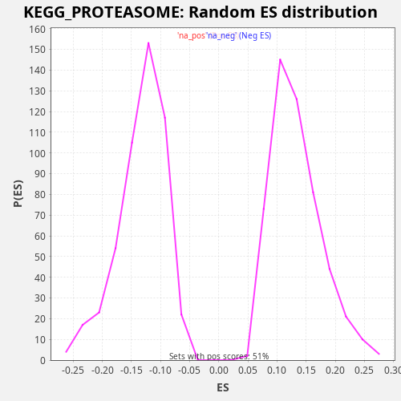

Profile of the Running ES Score & Positions of GeneSet Members on the Rank Ordered List
The same image in compressed SVG format
| Dataset | LabCL |
| Phenotype | NoPhenotypeAvailable |
| Upregulated in class | na_pos |
| GeneSet | KEGG_PROTEASOME |
| Enrichment Score (ES) | 0.3938027 |
| Normalized Enrichment Score (NES) | 2.9674053 |
| Nominal p-value | 0.0 |
| FDR q-value | 0.0 |
| FWER p-Value | 0.0 |
| SYMBOL | RANK IN GENE LIST | RANK METRIC SCORE | RUNNING ES | CORE ENRICHMENT | |
|---|---|---|---|---|---|
| 1 | PSMB8 | 198 | 96.793 | 0.0168 | Yes |
| 2 | PSME1 | 385 | 42.692 | 0.0341 | Yes |
| 3 | PSMB9 | 620 | 23.364 | 0.0495 | Yes |
| 4 | PSMA4 | 936 | 13.370 | 0.0615 | Yes |
| 5 | POMP | 1299 | 7.505 | 0.0715 | Yes |
| 6 | PSMB7 | 1433 | 6.311 | 0.0910 | Yes |
| 7 | PSME2 | 1708 | 4.383 | 0.1047 | Yes |
| 8 | PSMD11 | 1908 | 3.432 | 0.1215 | Yes |
| 9 | PSMB10 | 2271 | 2.337 | 0.1315 | Yes |
| 10 | PSMD13 | 2298 | 2.276 | 0.1554 | Yes |
| 11 | PSMC3 | 2686 | 1.584 | 0.1644 | Yes |
| 12 | PSMD14 | 2810 | 1.409 | 0.1844 | Yes |
| 13 | PSMC2 | 2839 | 1.363 | 0.2082 | Yes |
| 14 | PSMD2 | 3079 | 1.121 | 0.2233 | Yes |
| 15 | PSMA5 | 4004 | 0.576 | 0.2102 | Yes |
| 16 | PSMB3 | 4107 | 0.534 | 0.2309 | Yes |
| 17 | PSME3 | 4498 | 0.404 | 0.2398 | Yes |
| 18 | PSMB2 | 4515 | 0.401 | 0.2642 | Yes |
| 19 | PSMA1 | 4697 | 0.351 | 0.2817 | Yes |
| 20 | PSMA3 | 5208 | 0.244 | 0.2856 | Yes |
| 21 | PSMC4 | 5410 | 0.210 | 0.3023 | Yes |
| 22 | PSMD12 | 5538 | 0.193 | 0.3221 | Yes |
| 23 | PSMA6 | 5632 | 0.183 | 0.3432 | Yes |
| 24 | PSMC6 | 6189 | 0.125 | 0.3452 | Yes |
| 25 | PSMC5 | 6215 | 0.123 | 0.3692 | Yes |
| 26 | PSMD3 | 6226 | 0.122 | 0.3938 | Yes |
| 27 | PSMC1 | 7294 | 0.056 | 0.3747 | No |
| 28 | PSMD8 | 7760 | 0.037 | 0.3805 | No |
| 29 | PSMD6 | 8883 | 0.012 | 0.3592 | No |
| 30 | PSMA2 | 9177 | 0.008 | 0.3720 | No |
| 31 | PSMA7 | 10362 | 0.000 | 0.3481 | No |
| 32 | PSMD7 | 10733 | 0.000 | 0.3578 | No |
| 33 | PSMB4 | 11859 | -0.001 | 0.3364 | No |
| 34 | PSMB5 | 12617 | -0.007 | 0.3301 | No |
| 35 | PSMD4 | 15307 | -0.074 | 0.2440 | No |
| 36 | PSMD1 | 16165 | -0.121 | 0.2336 | No |
| 37 | PSMB6 | 19635 | -0.709 | 0.1153 | No |
| 38 | PSMB1 | 21161 | -1.696 | 0.0773 | No |
| 39 | PSME4 | 22668 | -6.505 | 0.0400 | No |
| 40 | PSMF1 | 22959 | -9.224 | 0.0530 | No |

{kind=link}
{kind=link}